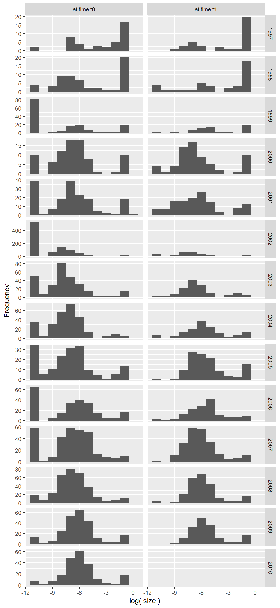
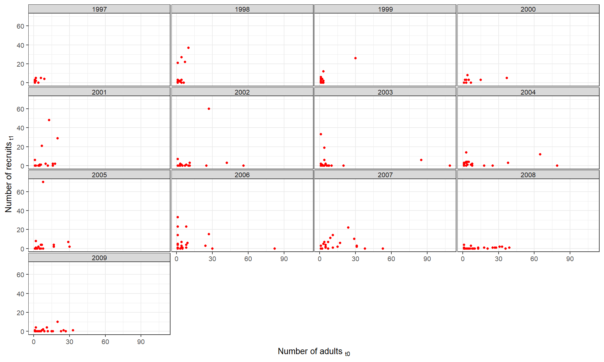

6 Adler Dataset: Extensions to the Mean IPM - Incorporating Year
In this chapter, we will introduce the effect of year into the vital rate models we fit in Chapter 4 for the mean IPM. We will build from Chapters 4 and 5 to continue exploring the data at the year-specific level, re-fit the vital rate models, and parameterize 13 new IPMs. We will then compare the lambda values of the year-specific IPMs to the lambda of the mean IPM.
As discussed in Chapter 5, this chapter will roughly follow the same workflow as Chapter 4, but I will not spend time reiterating the same things I detailed in Chapter 4. Therefore, a familiarity with the contents of Chapter 3 is necessary to follow along with this chapter!
We will start by jumping to step 3, to discuss how our vital rate models are impacted when we consider the effect of year.
6.0.1 3. Making the parameter “shopping list”
One approach to incorporating the effect of year on our vital rates is to use a random effect of year in the vital rate models. Introducing the random effect of year to our vital rate models modifies how we notate the models, and greatly expands our parameter “shopping list,” but it does not change the basic structure of the model. The result of this approach is that we can add all 13 IPMs to the PADRINO database under a single IPM ID, utilizing the _yr suffix functionality.
Another approach is to divide the dataset into 13 subsets, one for each year transition, and then fit vital rate models to each subset independently. In this approach, it is possible to fit models with different expressions for each year. When we add these IPMs to PADRINO, we would need a unique IPM ID for each year.
There are benefits and drawbacks of both approaches, and which approach you choose will depend on the data you are working with. For very large datasets with many more than 100 observations per year, fitting unique models for each year might make more sense than simply incorporating the random effect of year into the mean model. Alternatively, fitting unique models for each year may not make any difference if the best fitting models for each year follow the same model formula. In theory, you should test out both approaches with any dataset which has sufficient data, and compare the fit of the resulting models to choose how to proceed.
For the sake of simplicity, we will explore the first approach in this chapter. In Chapter 7, we will compare both approaches while incorporating the effect of treatment, as it is easier to keep track of the different models when there are fewer levels to model independently. Let’s go through each vital rate and update our shopping list accordingly for the models which consider the random effect of year in the model.
6.0.1.1 Survival model
In mathematical notation, the subscript on the model terms has an added \(_{yr}\) component:
\[Logit(s_{yr}(z)) = \beta_{s0,yr} + \beta_{s1,yr} * z\] The \(_{yr}\) subscript tells us that we will have unique values for the intercept and slope for each year, resulting in a different output each year (but the model expression stays the same).
In R, the model formula becomes:
glmer( survives_t1 ~ size_t0 + ( size_t0 | Year ), data = survival_df, family = binomial )The output of this model will now have different estimates of the slope and intercept for each year.
In ipmr, we similarly append the _yr suffix to our model terms:
s_yr = 1 / ( 1 + exp( -( beta_s0_yr + beta_s1_yr * size_0 ) ) )Now, instead of only needing to estimate two parameter values, we will need to extract 26 parameter values from our model, one slope and one intercept for each year. We can calculate these values by subtracting the random effects (from ranef()) from the fixed effects (from fixef()) for each year, or by simply using the coef() function.
6.0.1.2 Growth model
Similarly to the survival model, we add \(_{yr}\) to some of the model terms:
\[G_{yr}(z', z) = f_{g}(z', \mu_{g,yr}, \sigma_{g})\] \[\mu_{g,yr} = \beta_{g0,yr} + \beta_{g1,yr} * z\] \[ \sigma_{g} = \sqrt{( a * e^{( b * z )} )}\] Note that the function \(f_{g}\) does not get the \(_{yr}\) subscript appended, as this is the probability density function describing the size of the individual at time t1, which is the same function for each year. \(G_{yr}(z', z)\) gets the \(_{yr}\) subscript to describe that the input to the \(f_{g}\) function is dependent on year. Additionally, the growth variance model will be based on the aggregated data; there are no year-specific values.
In R, the model formulas become:
lmer( size_t1 ~ size_t0 + ( size_t0 | Year ), data = growth_df )
nls( y ~ a * exp( b * x ), start = list( a = 1, b = 0 ) )Note that the model describing the variance of the growth model has not changed. As with the survival model, we will be able to extract values for the slope and intercept of the growth model at each year.
In ipmr, we similarly append the _yr suffix to the relevant model terms:
g_yr = Norm( mu_g_yr, sigma_g )
mu_g_yr = beta_g0_yr + beta_g1_yr * size_0
sigma_g = sqrt( a * exp( b * size_0 ) )As in the survival model, we will now need to extract 13 estimates for each beta parameter, one for each yearly transition.
6.0.1.3 Recruitment model
With the recruitment model, we will also add the \(_{yr}\) subscript to some of model terms, in this case just the per-capita recruitment rate: \[F_{yr}(z') = \beta_{f,yr} * r_{d}(z')\] \[r_{d}(z') = f_{r_{d}}(z', \mu_{r_{d}}, \sigma_{r_{d}})\]
In R, we will write the model as:
glmer.nb( NRquad ~ ( 1 | Year ), data = recr_df )For now, we will actually ignore this model. The year-specific estimates corresponding to each \(\beta_{f,yr}\) will be calculated from the raw data. We will also calculate the values for the mean and standard deviation of recruitment size from the aggregated raw data.
In ipmr, we will again append the _yr suffix the model term referring to the year-specific per-capita recruitment rate, but not to the other parameters:
fy_yr = beta_f_yr * r_d
r_d = Norm( recr_sz, recr_sd )We therefore have 13 values of the year-specific per-capita recruitment rate and two values describing the size of recruits that we will need to calculate.
6.0.1.4 Other parameters
As with our mean model, we will need to define the minimum and maximum sizes over which to integrate, and the number of bins that ipmr will use to solve the integral. We will use 200 bins for all of our IPMs and the minimum and maximum sizes will be constant across all years.
6.0.2 5. Creating new folders in the R project
Since we are building these new IPMs from the same dataset we used to parameterize the mean IPM for Bouteloua gracilis, we should keep all of our files contained within the same R project. We want to make sure we keep our files organized, however, so we will just create some new folders named ‚ÄúBou_gra_yr‚Äù to differentiate the two workflows. The R project should look like this:| üìÅ Adler_Colorado | ||
| ‚Ü≥ | üÖÅ Adler_Colorado.Rproj | |
| üìÅ data | ||
| ‚Ü≥ | üìÅ Bou_gra | |
| üìÅ Bou_gra_yr | ||
| üìÅ R | ||
| ‚Ü≥ | üìÅ Bou_gra | |
| üìÅ Bou_gra_yr | ||
| üìÅ results | ||
| ‚Ü≥ | üìÅ Bou_gra | |
| üìÅ Bou_gra_yr |
6.0.3 6. Data formatting
In the “data/Bou_gra” subfolder, we already have formatted and cleaned data that we want to work with. We can either keep these files where they are and load them directly into the script from that subfolder, or we can copy and paste the files into the “data/Bou_gra_yr” subfolder. Either way, we should create our “notes” text document and indicate that we are using the already-formatted data from the previous workflow.
grow <- read.csv( "https://raw.githubusercontent.com/aspen1030/RUPDemo/main/growth_df_mod.csv" )
surv <- read.csv( "https://raw.githubusercontent.com/aspen1030/RUPDemo/main/survival_df_mod.csv" )
recr <- read.csv( "https://raw.githubusercontent.com/aspen1030/RUPDemo/main/recruitment_df_mod.csv" )
Bou_gra <- read.csv( "https://raw.githubusercontent.com/aspen1030/RUPDemo/main/Bou_gra_clean.csv" )6.0.4 7. Plotting the raw data by year
Since there is no need to do any new formatting to the data, we can call our data plotting script “01_Plotting.R” as it is our first script in this workflow.
In the previous workflow, we began by plotting size at t0 and size at t1 as histograms to examine the distributions of the size data. We should now do the same for each year. Consider a plot of size at t0 for the year 2000 and a plot of size at t1 for the year 2000. It might be tempting to think that we could just plot size at t0 for each year, because size at t1 for the year 2000 might be equivalent to size at t0 for the year 2001. However, this is incorrect; a plot of size at t1 for the year 2000 will have fewer individuals than both plots of size at t0 for the years 2000 and 2001, as some of the individuals will die after the 2000 census and new individuals will be recruited in 2001 which were not present in the 2000 census. Therefore, we should prepare histograms of both size at t0 and size at t1 for all years. We will go ahead and skip directly to plotting the log-transformed sizes.
Bou_gra$logsize_t1 <- log( Bou_gra$size_tplus1 )
Bou_gra_long <- pivot_longer( Bou_gra, cols = c( logsize, logsize_t1 ), names_to = "size", values_to = "size_value" )
Bou_gra_long$size <- as.factor( Bou_gra_long$size )
Bou_gra_long$Year_fac <- as.factor( Bou_gra_long$Year )
size_labs <- c( "at time t0", "at time t1" )
names(size_labs) <- c( "logsize", "logsize_t1" )
# png( 'results/Bou_gra_yr/histograms.png', width = 6, height = 13, units = "in", res = 150 )
Bou_gra_long %>% ggplot( aes( x = size_value ) ) +
geom_histogram( binwidth = 1 ) +
facet_grid( Year_fac ~ size,
scales = "free_y",
labeller = labeller( size = size_labs ) ) +
labs( x = "log( size )",
y = "Frequency" )
# dev.off( )From this plot, we can see that the distributions of size shift from time t0 to time t1 in all years, particularly with regards to the smallest individuals. A large loss in these individuals from time t0 to time t1 without noticeable increases in the middle size classes indicates high seedling mortality in a given year, which is most pronounced in 1999-2007. In some years, we see a shift in the main distribution from smaller sizes in time t0 to slightly larger sizes in time t1, which we would expect, as this suggests that individuals are indeed growing. Overall, since there do seem to be differences in the patterns between years, so modeling the data with the random effect of year seems like a reasonable choice. Additionally, the lower and upper bounds of size seem quite consistent across all years, so keeping the limits of integration constant across all years is also a reasonable choice.
Let’s now plot the survival data by year. We must first setup a function which bins the survival data by size for each year, so that we can visualize the data as probabilities of survival for a given size class. We then apply the function across 13 years to create a list that we can plot faceted by year.
df_binned_prop_year <- function( ii, df_in, n_bins, siz_var, rsp_var, years ){
# make sub-selection of data
df <- subset( df_in, Year == years$Year[ii] )
if( nrow( df ) == 0 ) return( NULL )
size_var <- deparse( substitute( siz_var ) )
resp_var <- deparse( substitute( rsp_var ) )
# binned survival probabilities
h <- ( max(df[,size_var], na.rm = T ) - min( df[,size_var], na.rm = T ) ) / n_bins
lwr <- min( df[,size_var], na.rm = T ) + ( h * c( 0:( n_bins - 1 ) ) )
upr <- lwr + h
mid <- lwr + ( 1/2 * h )
binned_prop <- function( lwr_x, upr_x, response ){
id <- which( df[,size_var] > lwr_x & df[,size_var] < upr_x )
tmp <- df[id,]
if( response == 'prob' ){ return( sum( tmp[,resp_var], na.rm = T ) / nrow( tmp ) ) }
if( response == 'n_size' ){ return( nrow( tmp ) ) }
}
y_binned <- Map( binned_prop, lwr, upr, 'prob' ) %>% unlist
x_binned <- mid
y_n_size <- Map( binned_prop, lwr, upr, 'n_size' ) %>% unlist
# output data frame
data.frame( xx = x_binned,
yy = y_binned,
nn = y_n_size ) %>%
setNames( c( size_var, resp_var, 'n_size' ) ) %>%
mutate( Year = years$Year[ii] )
}
surv_yrs <- data.frame( Year = surv$Year %>% unique %>% sort )
surv_bin_yrs <- lapply( 1:13, df_binned_prop_year, Bou_gra, 20,
logsize, survives_tplus1, surv_yrs )
surv_yr_pan_df <- bind_rows( surv_bin_yrs ) %>%
mutate( transition = paste( paste0( Year ),
substr( paste0( Year + 1 ), 3, 4 ),
sep = '-' ) ) %>%
mutate( year = as.integer( Year - 1996 ) )
# png( 'results/Bou_gra_yr/survival_binned_yr.png', width = 10, height = 6, units = "in", res = 150 )
ggplot( data = surv_yr_pan_df,
aes( x = logsize,
y = survives_tplus1 ) ) +
geom_point( alpha = 0.5,
pch = 16,
size = 1,
color = 'red' ) +
scale_y_continuous( breaks = c( 0.1, 0.5, 0.9 ) ) +
# split in panels
facet_wrap( .~ transition, nrow = 4 ) +
theme_bw( ) +
theme( axis.text = element_text( size = 8 ),
title = element_text( size = 10 ),
strip.text.y = element_text( size = 5,
margin = margin( 0.5, 0.5, 0.5, 0.5,
'mm' ) ),
strip.text.x = element_text( size = 5,
margin = margin( 0.5, 0.5, 0.5, 0.5,
'mm' ) ),
strip.switch.pad.wrap = unit( '0.5', unit = 'mm' ),
panel.spacing = unit( '0.5', unit = 'mm' ) ) +
labs( x = expression( 'log(size)'[t0] ),
y = expression( 'Survival to time t1' ) )
# dev.off( )As always happens in demographic data, the relationship between survival probability at time t1 and size a time t0 is variable through years, further justifying our choice to create an IPM for each year.
Next, we should plot the growth data faceted by year.
grow_yr_pan_df <- grow %>%
mutate( transition = paste( paste0( Year ),
substr( paste0( Year + 1 ), 3, 4 ),
sep = '-' ) ) %>%
mutate( year = as.integer( Year - 1996 ) )
# png( 'results/Bou_gra_yr/growth_yr.png', width = 10, height = 6, units = "in", res = 150 )
ggplot(data = grow_yr_pan_df, aes( x = logsize, y = log( size_tplus1 ) ) ) +
geom_point( alpha = 0.5,
pch = 16,
size = 0.7,
color = 'red' ) +
# split in panels
facet_wrap( .~ transition, nrow = 4 ) +
theme_bw( ) +
theme( axis.text = element_text( size = 8 ),
title = element_text( size = 10 ),
strip.text.y = element_text( size = 8,
margin = margin( 0.5, 0.5, 0.5, 0.5,
'mm' ) ),
strip.text.x = element_text( size = 8,
margin = margin( 0.5, 0.5, 0.5, 0.5,
'mm' ) ),
strip.switch.pad.wrap = unit( '0.5', unit = 'mm' ),
panel.spacing = unit( '0.5', unit = 'mm' ) ) +
labs( x = expression( 'log( size )'[t0] ),
y = expression( 'log( size )'[t1] ) )# dev.off( )Here, we see the effect of transition year on the growth vital rate. Some transition years show less spread in the data (03-04) compared to others (01-02), and we can start to see how the different years might be modeled with different slopes and/or intercepts.
Now we can plot the recruitment data faceted by year. For visualiztion purposes, I’ve filtered out the largest value (the single year where over 600 recruits were added to the dataset).
indiv_qd <- surv %>%
group_by( Quad ) %>%
count( Year ) %>%
rename( n_adults = n ) %>%
mutate( Year = Year + 1 )
repr_yr <- indiv_qd %>%
left_join( recr ) %>%
mutate( repr_pc = NRquad / n_adults ) %>%
mutate( Year = Year - 1 ) %>%
drop_na## Joining with `by = join_by(Quad, Year)`# png( 'results/Bou_gra_yr/recruit_yr.png', width = 10, height = 6, units = "in", res = 150 )
repr_yr %>%
filter( NRquad != max( repr_yr$NRquad ) ) %>%
filter( n_adults != max( repr_yr$n_adults ) ) %>%
ggplot( aes( x = n_adults, y = NRquad ) ) +
geom_point( alpha = 1,
pch = 16,
size = 1,
color = 'red' ) +
facet_wrap( .~ Year, nrow = 4 ) +
theme_bw( ) +
theme( axis.text = element_text( size = 8 ),
title = element_text( size = 10 ),
strip.text.y = element_text( size = 8,
margin = margin( 0.5, 0.5, 0.5, 0.5,
'mm' ) ),
strip.text.x = element_text( size = 8,
margin = margin( 0.5, 0.5, 0.5, 0.5,
'mm' ) ),
strip.switch.pad.wrap = unit( '0.5', unit = 'mm' ),
panel.spacing = unit( '0.5', unit = 'mm' ) ) +
labs( x = expression( 'Number of adults '[ t0] ),
y = expression( 'Number of recruits '[ t1] ) )# dev.off( )As with the other vital rates, we see some differences between the years which we will incorporate into our IPM by taking a year-specific per-capita mean recruitment rate across all plots.
We should also take a moment to plot histograms of the recruit size data, so we can determine if we should take year-specific means and standard deviations of recruit size, or if we expect that taking the global mean and standard deviation would be sufficient.
recSize <- Bou_gra %>% subset( recruit == 1)
recSize$Year_fac <- as.factor( recSize$Year )
# png( 'results/Bou_gra_yr/recr_histograms.png', width = 10, height = 6, units = "in", res = 150 )
recSize %>% ggplot( aes( x = logsize ) ) +
geom_histogram( ) +
facet_wrap( Year_fac ~ .,
scales = "free_y",
nrow = 4 ) +
labs( x = expression('log( size )'[t0]),
y = "Frequency" )
# dev.off( )Note that I’ve used the "free_y" option in facet_wrap() to allow the y-axis to be fitted to each panel individually, while the x-axis remains fixed across all panels. This ensures that we can actually compare the distributions across years, even though 2002 has an order of magnitude more recruits than any other year. While there is some variability in the distributions across the years, the majority of recruits enter the population at the minimum size and there doesn’t seem to be any particularly wild years. Keep in mind also that the sizes on the x-axis are log-transformed; we’re dealing with incredibly small individuals overall. While the differences may seem pronounced on this scale, it is important to keep in mind the biological scale of these individuals. An individual with log(size) around -10 has an area of 0.005 cm\(^2\), whereas an individual with log(size) of -6 has an area of 0.25 cm\(^2\). These are both very, very small plants; differences in size at this scale may very well be attributable to errors in how the plants were recorded on the paper maps or digitized. We will therefore keep the recruitment size parameters constant throughout all years.
6.0.5 8. Fitting vital rate models with the random effect of year
Since we already wrote our model formulas in step 3, we are ready to jump right into fitting these models to the data.
6.0.5.1 Survival model
Here is the model we wrote previously:
surv_df <- surv %>%
mutate( logarea = log( basalArea_genet ) )
su_mod_yr <- glmer( survives_tplus1 ~ logarea + ( logarea | Year ), data = surv_df, family = binomial )Let’s plot the model over the data and check the model fit:
ranef_su <- data.frame( coef( su_mod_yr )[1] )
years_v <- c( 1997:2009 )
surv_yr_plots <- function( i ){
surv_temp <- as.data.frame( surv_bin_yrs[[i]] )
x_temp <- seq( min( surv_temp$logsize, na.rm = T ),
max( surv_temp$logsize, na.rm = T ),
length.out = 100)
pred_temp <- boot::inv.logit( ranef_su[i,1] + ranef_su[i,2] * x_temp )
pred_temp_df <- data.frame( logarea = x_temp, survives_tplus1 = pred_temp )
temp_plot <- surv_temp %>% ggplot( ) +
geom_point( aes( x = logsize, y = survives_tplus1 ) ) +
geom_line( data = pred_temp_df, aes( x = logarea,
y = survives_tplus1 ),
color = 'red',
lwd = 1 ) +
labs( title = paste0( years_v[i] ),
x = expression( 'log( size )'[t0] ),
y = expression( 'Survival probability '[ t1] ) )
if( i %in% c( 2:4, 6:8, 10:12 ) ){
temp_plot <- temp_plot + theme( axis.title.y = element_blank( ) )
}
return(temp_plot)
}
surv_yrs <- lapply( 1:13, surv_yr_plots )
surv_years <- wrap_plots( surv_yrs ) + plot_layout( nrow = 4 )
# png( 'results/Bou_gra_yr/survival_pred.png', width = 10, height = 8, units = "in", res = 150 )
surv_years
# dev.off( )These plots show the year-specific models plotted over the binned data. Some years seem to be fit better than others, but overall the model describes the data fairly well.
6.0.5.2 Growth model
Here is the first model that we wrote previously, describing the growth of individuals:
grow_df <- grow %>%
mutate( logarea_t0 = log( basalArea_genet ),
logarea_t1 = log( size_tplus1 ) )
gr_mod_yr <- lmer( logarea_t1 ~ logarea_t0 + ( logarea_t0 | Year ), data = grow_df )Let’s plot the model over the data and check the model fit:
ranef_gr <- data.frame( coef( gr_mod_yr )[1] )
grow_yr_plots <- function( i ){
temp_plot <- grow_df %>% filter( Year == i ) %>% ggplot( ) +
geom_point( aes( x = logarea_t0,
y = logarea_t1 ) ) +
geom_abline( aes( intercept = ranef_gr[which(rownames( ranef_gr ) == i ),1],
slope = ranef_gr[which(rownames( ranef_gr ) == i ),2] ),
color = "red",
lwd = 1 ) +
labs( title = paste0( i ),
x = expression( 'log( size ) '[ t0] ),
y = expression( 'log( size ) '[ t1] ) )
if( i %in% c( 1998:2000, 2002:2004, 2006:2008 ) ){
temp_plot <- temp_plot + theme( axis.title.y = element_blank( ) )
}
return(temp_plot)
}
grow_yrs <- lapply( 1997:2009, grow_yr_plots )
grow_years <- wrap_plots( grow_yrs ) + plot_layout( nrow = 4 )
# png( 'results/Bou_gra_yr/grow_pred.png', width = 10, height = 6, units = "in", res = 150 )
grow_years# dev.off( )From these plots, it is fairly difficult to see how each plot has a unique model intercept and slope, since each year seems to be fit pretty well. In general, most year-specific models are underestimating the size at time t1 of the largest individuals, but the regression line seems pretty great otherwise.
Before we move onto the growth variance model, let’s take a moment to consider if this really is the best model. With both the survival and growth models, we assumed that the simplest model with only linear terms best describes the data. With the survival model, I will just reveal that including nonlinear terms causes the model to fail to converge. It’s hard to visually confirm that our model fits well without linear terms due to the more abstract nature of the logistic regression, but with our linear growth model, we can see in the previous plot that there might be room for improvement. Let’s compare this growth model to two other models which include nonlinear terms. The first will include a quadratic term, and the second will include a quadratic term and a cubic term. The expressions for these models are: \[\mu_{g2,yr} = \beta_{g0,yr} + \beta_{g1,yr} * z + \beta_{g2,yr} * z^2\] \[\mu_{g3,yr} = \beta_{g0,yr} + \beta_{g1,yr} * z + \beta_{g2,yr} * z^2 + \beta_{g3,yr} * z^3\]
grow_df$logarea_t0_2 <- grow_df$logarea_t0^2
grow_df$logarea_t0_3 <- grow_df$logarea_t0^3
gr_mod_yr2 <- lmer( logarea_t1 ~ logarea_t0 + logarea_t0_2 + ( logarea_t0 | Year ), data = grow_df )
gr_mod_yr3 <- lmer( logarea_t1 ~ logarea_t0 + logarea_t0_2 + logarea_t0_3 + ( logarea_t0 | Year ), data = grow_df )
g_mods <- c( gr_mod_yr, gr_mod_yr2, gr_mod_yr3 )
AICtab( g_mods, weights = T )## dAIC df weight
## model2 0.0 7 0.9911
## model3 9.4 8 0.0089
## model1 460.1 6 <0.001Comparing the AIC values of these models indicates that including the quadratic term greatly improves the fit of the model over the model only including the linear term, and adding the cubic term does not improve the fit of the model with the quadratic term.
Let’s plot the model with the quadratic term:
ranef_gr2 <- data.frame( coef( gr_mod_yr2 )[1] )
grow_yr_plots2 <- function( i ){
temp_f <- function( x ) ranef_gr2[which(rownames( ranef_gr2 ) == i ),1] + ranef_gr2[which(rownames( ranef_gr2 ) == i ),2] * x + ranef_gr2[which(rownames( ranef_gr2 ) == i ),3] * x^2
temp_plot <- grow_df %>% filter( Year == i ) %>% ggplot( ) +
geom_point( aes( x = logarea_t0,
y = logarea_t1 ) ) +
geom_function( fun = temp_f,
color = "green",
lwd = 1 ) +
labs( title = paste0( i ),
x = expression( 'log( size ) '[ t0] ),
y = expression( 'log( size ) '[ t1] ) )
if( i %in% c( 1998:2000, 2002:2004, 2006:2008 ) ){
temp_plot <- temp_plot + theme( axis.title.y = element_blank( ) )
}
return(temp_plot)
}
grow_yrs2 <- lapply( 1997:2009, grow_yr_plots2 )
grow_years2 <- wrap_plots( grow_yrs2 ) + plot_layout( nrow = 4 )
# png( 'results/Bou_gra_yr/grow_pred_2.png', width = 10, height = 6, units = "in", res = 150 )
grow_years2# dev.off( )And just for fun, I’ll also plot the model with the cubic term and we can compare all three models:

Here, I’ve plotted the model with only the linear term on the top row (red line), the model with the added quadratic term on the middle row (green line), and the model with the added cubic term on the bottom row (blue line). I have also only plotted 2003 through 2009 for improved readability. First, notice how the green line fits the largest and smallest individuals much better than the red. Second, notice that there is virtually no change when comparing the fit of the green vs the blue line. Therefore, choosing the model with the quadratic term but without the cubic term makes the most sense here.
Now that we’ve decided on which growth model we will choose, we need to fit the growth variance model.
x <- fitted( gr_mod_yr2 )
y <- resid( gr_mod_yr2 )^2
gr_var <- nls( y ~ a * exp( b * x ), start = list( a = 1, b = 0 ) )This is the same model as the one we wrote in Chapter 4 4.4.8.1, as the growth variance model does not change by year.
6.0.5.3 Recruitment model
First, we model the number of recruits using the negative binomial distribution with the random effect of year:
rec_mod <- glmer.nb( NRquad ~ ( 1 | Year ), data = recr )Then, we use the predict( ) function to predict the number of recruits per year per quad, group the data by year, and sum up the observed and predicted number of recruits per year across all quads:
recr_df <- recr %>%
mutate( pred_mod = predict( rec_mod, type = 'response' ) )
rec_sums_df <- recr_df %>%
group_by( Year ) %>%
summarise( NRquad = sum( NRquad ),
pred_mod = sum( pred_mod ) ) %>%
ungroupThen, we sum up the number of adults present in each year, and rename the year column so we can link the number of adults at time t0 to the number of recruits at time t1:
indiv_yr <- surv_df %>%
count( Year ) %>%
rename( n_adults = n ) %>%
mutate( Year = Year + 1 )Finally, we join these two dataframes and calculate a per-capita recruitment rate based on our model and on the observed recruits:
repr_pc_yr <- indiv_yr %>%
left_join( rec_sums_df ) %>%
mutate( repr_percapita = pred_mod / n_adults ) %>%
mutate( repr_pc_obs = NRquad / n_adults ) %>%
mutate( Year = Year - 1 ) %>%
drop_naAnd now we can plot the data against the model predictions:
# png( 'results/Bou_gra_yr/recruit_pred.png', width = 6, height = 4, units = "in", res = 150 )
repr_pc_yr %>%
ggplot() +
geom_point( aes( x = repr_pc_obs,
y = repr_percapita ) ) +
geom_abline( aes( intercept = 0,
slope = 1 ),
color = "red",
lwd = 2,
alpha = 0.5 ) +
labs( x = "Observed per capita recruitment",
y = "Predicted per capita recruitment" )# dev.off( )On the x axis, we have the observed per-capita recruitment rates and on the y axis are the corresponding modeled per-capita recruitment rates. Each point shows a single transition year. Most points are very close to the 1:1 line, indicating the model predicts most years well. We see that the two points with the highest observed recruitment are less accurately predicted by the model, but this is not so unrealistic: recall that one plot with over 600 recruits in a single year, which is clearly going to have a strong influence on the mean recruitment rate of that year.
6.0.5.4 Exporting parameter estimates
Now that we’ve modeled all of the vital rates and calculated all of the varying parameters, we need to store the values in dataframes that we can work with in the next step, constructing the IPMs. As with our mean model, we will export one dataframe for each model. We will also rearrange the parameters into two dataframes: one which contains mean model parameter estimates plus all parameters which do not vary across the years, and one which contains only estimates of the parameters which vary across the years.
Let’s start with the survival model:
su_yr_r <- data.frame( coefficient = paste0( "year_", rownames( coef( su_mod_yr )$Year ) ),
value = coef( su_mod_yr )$Year[,"(Intercept)"] )
su_la_r <- data.frame( coefficient = paste0( "logarea_", rownames( coef( su_mod_yr )$Year ) ),
value = coef( su_mod_yr )$Year[,"logarea"] )
surv_out_yr <- Reduce( function(...) rbind(...), list( su_la_r, su_yr_r ) ) %>%
mutate( coefficient = as.character( coefficient ) )
# write.csv( surv_out_yr, "data/Bou_gra_yr/surv_pars.csv", row.names = F )And then the growth model:
var_fe <- data.frame( coefficient = names( coef( gr_var ) ),
value = coef( gr_var ) )
year_re <- data.frame( coefficient = paste0( "year_", rownames( coef( gr_mod_yr2 )$Year ) ),
value = coef( gr_mod_yr2 )$Year[,"(Intercept)"] )
la_re <- data.frame( coefficient = paste0( "logarea_t0_", rownames( coef( gr_mod_yr2 )$Year ) ),
value = coef( gr_mod_yr2 )$Year[,"logarea_t0"] )
la2_re <- data.frame( coefficient = paste0( "logarea_t0_2_", rownames( coef( gr_mod_yr2 )$Year ) ),
value = coef( gr_mod_yr2 )$Year[,"logarea_t0_2"] )
grow_out_yr <- Reduce( function(...) rbind(...), list( var_fe, la_re, la2_re, year_re ) ) %>%
mutate( coefficient = as.character( coefficient ) )
# write.csv( grow_out_yr, "data/Bou_gra_yr/grow_pars.csv", row.names = F )And the recruitment model:
rc_pc <- data.frame( coefficient = paste0( "rec_pc_", repr_pc_yr$Year ),
value = repr_pc_yr$repr_percapita )
rc_sz <- data.frame( coefficient = c( "rec_siz", "rec_sd" ),
value = c( mean( recSize$logsize ),
sd( recSize$logsize ) ) )
recr_out_yr <- Reduce( function(...) rbind(...), list( rc_pc, rc_sz ) ) %>%
mutate( coefficient = as.character( coefficient ) )
# write.csv( recr_out_yr, "data/Bou_gra_yr/recr_pars.csv", row.names = F )Next, let’s put the constant parameters, fixed effects estimates, and mean parameter estimates into a dataframe. These values can be used to construct the mean IPM, or to construct IPMs holding individual vital rate parameters constant for testing. This dataframe also contains the parameters which will not vary across all year-specific IPMs, such as the bounds of integration, the number of bins, the parameters for the growth variance model, and the recruit size parameters.
constants <- data.frame( coefficient = c( "recr_sz",
"recr_sd",
"a",
"b",
"L",
"U",
"mat_siz" ),
value = c( mean( recSize$logsize ),
sd( recSize$logsize ),
as.numeric(coef(gr_var)[1]),
as.numeric(coef(gr_var)[2]),
grow_df$logarea_t0 %>% min,
grow_df$logarea_t0 %>% max,
200 ) )
surv_fe <- data.frame( coefficient = c( "surv_b0",
"surv_b1" ),
value = fixef( su_mod_yr ) )
grow_fe <- data.frame( coefficient = c( "grow_b0",
"grow_b1",
"grow_b2" ),
value = fixef( gr_mod_yr2 ) )
rec_fe <- data.frame( coefficient = "fecu_b0",
value = mean( repr_pc_yr$repr_percapita ) )
pars_cons <- Reduce(function(...) rbind(...), list( surv_fe, grow_fe, rec_fe, constants ) ) %>%
mutate( coefficient = as.character( coefficient ) )
rownames( pars_cons ) <- 1:13
pars_cons_wide <- as.list( pivot_wider( pars_cons, names_from = "coefficient", values_from = "value" ) )
# write.csv( pars_cons_wide, "data/Bou_gra_yr/pars_cons.csv", row.names = F )Lastly, let’s put all of the varying parameters into their own dataframe, too. This will also be useful in the testing stage.
su_b0 <- data.frame( coefficient = paste0( "surv_b0_", rownames( coef( su_mod_yr )$Year ) ),
value = coef( su_mod_yr )$Year[,"(Intercept)"] )
su_b1 <- data.frame( coefficient = paste0( "surv_b1_", rownames( coef( su_mod_yr )$Year ) ),
value = coef( su_mod_yr )$Year[,"logarea"] )
grow_b0 <- data.frame( coefficient = paste0( "grow_b0_", rownames( coef( gr_mod_yr2 )$Year ) ),
value = coef( gr_mod_yr2 )$Year[,"(Intercept)"] )
grow_b1 <- data.frame( coefficient = paste0( "grow_b1_", rownames( coef( gr_mod_yr2 )$Year ) ),
value = coef( gr_mod_yr2 )$Year[,"logarea_t0"] )
grow_b2 <- data.frame( coefficient = paste0( "grow_b2_", rownames( coef( gr_mod_yr2 )$Year ) ),
value = coef( gr_mod_yr2 )$Year[,"logarea_t0_2"] )
fecu_b0 <- data.frame( coefficient = paste0( "fecu_b0_", repr_pc_yr$Year ),
value = repr_pc_yr$repr_percapita )
pars_var <- Reduce(function(...) rbind(...), list( su_b0, su_b1, grow_b0, grow_b1, grow_b2, fecu_b0 ) )
pars_var_wide <- as.list( pivot_wider( pars_var, names_from = "coefficient", values_from = "value" ) )
# write.csv( pars_var_wide, "data/Bou_gra_yr/pars_var.csv", row.names = F )Now that all of our parameter values are organized, we are ready to build the year-specific IPM!
6.0.6 9. Building the year-specific IPMs from scratch
In Chapter 4, we built the mean IPM from scratch, which we will now expand upon to create the year-specific IPMs. We can borrow most of the vital rate functions we wrote in Chapter 4, even though our vital rate expressions now contain the \(_{yr}\) subscript on most of the terms. Once we build the IPM, we can just input the year-specific parameter values into the kernel function one year at a time.
We need to first update the growth vital rate function to accommodate the changes we made when we selected a better-fitting model. Recall the mathematical notation of the new model: \[\mu_{g2,yr} = \beta_{g0,yr} + \beta_{g1,yr} * z + \beta_{g2,yr} * z^2\] And how we wrote the model expression in R:
lmer( logarea_t1 ~ logarea_t0 + logarea_t0_2 + ( logarea_t0 | Year ), data = grow_df )Let’s write the function describing the model of standard deviation of the growth model, and then the revised function describing growth from size at time t0 to size at time t1. The revised growth function just has the added quadratic term:
# Standard deviation of growth model
grow_sd <- function( x, pars ) {
pars$a * ( exp( pars$b * x ) ) %>% sqrt
}
# Growth from size x to size y
gxy <- function( x, y, pars ) {
return( dnorm( y, mean = pars$grow_b0 + pars$grow_b1*x + pars$grow_b2*x^2,
sd = grow_sd( x, pars ) ) )
}Now we can load the survival functions, and the function describing the P kernel:
# Inverse logit
inv_logit <- function( x ) { exp( x ) / ( 1 + exp( x ) ) }
# Survival of x-sized individual to time t1
sx <- function( x, pars ) {
return( inv_logit( pars$surv_b0 + pars$surv_b1 * x ) )
}
# Transition of x-sized individual to y-sized individual at time t1
pxy <- function( x, y, pars ) {
return( sx( x, pars ) * gxy( x, y, pars ) )
}And finally the recruitment function:
# Per-capita production of y-sized recruits
fy <- function( y, pars, h ){
n_recr <- pars$fecu_b0
recr_y <- dnorm( y, pars$recr_sz, pars$recr_sd ) * h
recr_y <- recr_y / sum( recr_y )
f <- n_recr * recr_y
return( f )
}Next we can assemble the kernel function. I have removed the comments to save space; refer to Chapter 4 4.4.9 for further explanation.
kernel <- function( pars ) {
n <- pars$mat_siz
L <- pars$L
U <- pars$U
h <- ( U - L ) / n
b <- L + c( 0:n ) * h
y <- 0.5 * ( b[1:n] + b[2:( n + 1 )] )
Fmat <- matrix( 0, n, n )
Fmat[] <- matrix( fy( y, pars, h ), n, n )
Smat <- c( )
Smat <- sx( y, pars )
Gmat <- matrix( 0, n, n )
Gmat[] <- t( outer( y, y, gxy, pars ) ) * h
Tmat <- matrix( 0, n, n )
for( i in 1:( n / 2 ) ) {
Gmat[1,i] <- Gmat[1,i] + 1 - sum( Gmat[,i] )
Tmat[,i] <- Gmat[,i] * Smat[i]
}
for( i in ( n / 2 + 1 ):n ) {
Gmat[n,i] <- Gmat[n,i] + 1 - sum( Gmat[,i] )
Tmat[,i] <- Gmat[,i] * Smat[i]
}
k_yx <- Fmat + Tmat
return( list( k_yx = k_yx,
Fmat = Fmat,
Tmat = Tmat,
Gmat = Gmat,
meshpts = y ) )
}Using the constant parameters, mean values of calculated parameters, and estimates of the fixed effects in the GLMMs, we can then calculate the mean population growth rate, \(\lambda_{mean}\):
pars_mean <- pars_cons_wide
lambda_ipm <- function( i ) {
return( Re( eigen( kernel( i )$k_yx )$value[1] ) )
}
lam_mean <- lambda_ipm( pars_mean )
lam_mean## [1] 1.221076Now, we can input the year-specific parameter values and calculate the population growth rates for each year, \(\lambda_{yr}\):
bogr_yr <- c( 1997:2009 )
pars_yr <- vector( mode = "list", length = length( bogr_yr ) )
extr_value_list <- function( x, field ) {
return( as.numeric( x[paste0( field )] %>% unlist( ) ) )
}
prep_pars <- function( i ) {
yr_now <- bogr_yr[i]
pars_year <- list( surv_b0 = extr_value_list( pars_var_wide, paste( "surv_b0", yr_now, sep = "_" ) ),
surv_b1 = extr_value_list( pars_var_wide, paste( "surv_b1", yr_now, sep = "_" ) ),
grow_b0 = extr_value_list( pars_var_wide, paste( "grow_b0", yr_now, sep = "_" ) ),
grow_b1 = extr_value_list( pars_var_wide, paste( "grow_b1", yr_now, sep = "_" ) ),
grow_b2 = extr_value_list( pars_var_wide, paste( "grow_b2", yr_now, sep = "_" ) ),
a = extr_value_list( pars_cons_wide, "a" ),
b = extr_value_list( pars_cons_wide, "b" ),
fecu_b0 = extr_value_list( pars_var_wide, paste( "fecu_b0", yr_now, sep = "_" ) ),
recr_sz = extr_value_list( pars_cons_wide, "recr_sz" ),
recr_sd = extr_value_list( pars_cons_wide, "recr_sd" ),
L = extr_value_list( pars_cons_wide, "L" ),
U = extr_value_list( pars_cons_wide, "U" ),
mat_siz = 200 )
return( pars_year )
}
pars_yr <- lapply( 1:length( bogr_yr ), prep_pars )
calc_lambda <- function( i ) {
lam <- Re( eigen( kernel( pars_yr[[i]] )$k_yx )$value[1] )
return( lam )
}
lambdas_yr <- lapply( 1:length( bogr_yr ), calc_lambda )
names( lambdas_yr ) <- bogr_yr6.0.6.1 Comparing the year-specific lambdas
We will examine these values in a moment. We should also calculate the mean kernel from all of the year-specific kernels, and calculate some other mean lambda values to compare to the lambda from the mean model.
year_kern <- function( i ) {
return( kernel( pars_yr[[i]] )$k_yx )
}
kern_yr <- lapply( 1:length( bogr_yr ), year_kern )
all_mat <- array( dim = c( 200, 200, 13 ) )
for( i in 1:length( bogr_yr ) ) {
all_mat[,,i] <- as.matrix( kern_yr[[i]] )
}
mean_kern <- apply( all_mat, c( 1, 2 ), mean )
lam_mean_kern <- Re( eigen( mean_kern )$value[1] )
lam_mean_kern## [1] 1.219977Now, let’s check the observed population growth rate (changes in number of individuals) against the projected population growth rate. The population growth rate should be more precise than asymptotic lambda in checking our models. Asymptotic lambda is the population growth rate at the “stable stage distribution” - the stage distribution that the population reaches after a long period of time.
# Population counts at time t0
pop_counts_t0 <- Bou_gra %>%
group_by( Year, Quad ) %>%
summarize( n_t0 = n( ) ) %>%
ungroup %>%
mutate( Year = Year + 1 )
# Population counts at time t1
pop_counts_t1 <- Bou_gra %>%
group_by( Year, Quad ) %>%
summarize( n_t1 = n( ) ) %>%
ungroup
# Calculate observed population growth rates,
# accounting for discontinued sampling!
pop_counts <- left_join( pop_counts_t0,
pop_counts_t1 ) %>%
# by dropping NAs, we remove gaps in sampling!
drop_na %>%
group_by( Year ) %>%
summarise( n_t0 = sum( n_t0 ),
n_t1 = sum( n_t1 ) ) %>%
ungroup %>%
mutate( obs_pgr = n_t1 / n_t0 ) %>%
mutate( lambda = lambdas_yr %>% unlist )
lam_mean_yr <- mean( pop_counts$lambda, na.rm = T )
lam_mean_count <- mean( pop_counts$obs_pgr, na.rm = T )
lam_mean_geom <- exp( mean( log( pop_counts$obs_pgr ), na.rm = T ) )
lam_mean_geom## [1] 1.164344lam_mean_overall <- sum( pop_counts$n_t1 ) / sum( pop_counts$n_t0 )
lam_mean_overall## [1] 1.05844We can also check our model by projecting a population vector for each year using the year-specific models, and compare the projected population to the observed population:
count_indivs_by_size <- function( size_vector,
lower_size,
upper_size,
matrix_size ){
size_vector %>%
cut( breaks = seq( lower_size - 0.00001,
upper_size + 0.00001,
length.out = matrix_size + 1 ) ) %>%
table %>%
as.vector
}
yr_pop_vec <- function( i ) {
vec_temp <- surv_df %>% filter( Year == i ) %>% select( logsize ) %>% unlist( )
min_sz <- pars_mean$L
max_sz <- pars_mean$U
pop_vec <- count_indivs_by_size( vec_temp, min_sz, max_sz, 200 )
return( pop_vec )
}
year_pop <- lapply( 1997:2009, yr_pop_vec )
proj_pop <- function( i ) {
sum( all_mat[,,i] %*% year_pop[[i]] )
}
projected_pop_ns <- sapply( 1:13, proj_pop )
pop_counts_update <- pop_counts %>%
mutate( proj_n_t1 = projected_pop_ns ) %>%
mutate( proj_pgr = proj_n_t1/n_t0 )
# png( 'results/Bou_gra_yr/obs_proj_lambdas.png', width = 6, height = 4, units = "in", res = 150 )
ggplot( pop_counts_update ) +
geom_point( aes( x = lambda,
y = obs_pgr ),
color = 'brown' ) +
geom_point( aes( x = proj_pgr,
y = obs_pgr ),
color = 'red' ) +
geom_abline( aes(intercept = 0,
slope = 1) ) +
labs( x = "Modeled lambda",
y = "Observed population growth rate" )# dev.off( )| Year | nt0 | nt1 |
Observed population growth |
Yearly asymptotic lambda |
Projected nt1 |
Projected population growth |
|---|---|---|---|---|---|---|
| 1998 | 42 | 58 | 1.381 | 1.277 | 69 | 1.646 |
| 1999 | 58 | 159 | 2.741 | 2.291 | 151 | 2.608 |
| 2000 | 49 | 84 | 1.714 | 0.947 | 120 | 2.446 |
| 2001 | 84 | 74 | 0.881 | 1.076 | 97 | 1.15 |
| 2002 | 174 | 934 | 5.368 | 3.678 | 653 | 3.75 |
| 2003 | 934 | 286 | 0.306 | 0.907 | 363 | 0.388 |
| 2004 | 286 | 283 | 0.99 | 0.896 | 214 | 0.748 |
| 2005 | 283 | 173 | 0.611 | 0.974 | 216 | 0.763 |
| 2006 | 173 | 233 | 1.347 | 1.257 | 213 | 1.23 |
| 2007 | 233 | 314 | 1.348 | 1.165 | 276 | 1.186 |
| 2008 | 314 | 342 | 1.089 | 1.027 | 325 | 1.035 |
| 2009 | 342 | 245 | 0.716 | 0.972 | 267 | 0.78 |
| 2010 | 245 | 220 | 0.898 | 0.967 | 202 | 0.826 |
Once we are satisfied with our IPM, we can begin constructing it with ipmr.
6.0.7 10. Building the year-specific IPMs with ipmr
As in the previous sections, we will rely heavily on the code we already wrote in Chapter 4. However, we will now implement the _yr suffix and utilize the parameter set functionality in ipmr. The first step is to stick all of our varying and constant parameters into a single list to give to ipmr.
all_pars <- c( pars_cons_wide, pars_var_wide )
# write.csv( all_pars, "data/Bou_gra_yr/all_pars.csv", row.names = F )Now let’s build the proto-IPM. Some comments have been included in the following code to explain the new pieces, but refer back to Chapter 4 4.4.10 for more details about constructing the IPM in ipmr. I’m jumping right in to the full proto-IPM with both kernels. Note the use of the _yr suffix on all terms AND expressions which vary across the years, every time they are mentioned!!!
library( ipmr )
proto_ipm_yr <- init_ipm( sim_gen = "simple",
di_dd = "di",
det_stoch = "det" ) %>%
define_kernel(
name = "P_yr",
family = "CC",
formula = s_yr * g_yr,
s_yr = plogis( surv_b0_yr +
surv_b1_yr * size_1),
g_yr = dnorm( size_2, mu_g_yr, grow_sig ),
mu_g_yr = grow_b0_yr + grow_b1_yr * size_1 + grow_b2_yr * size_1^2,
grow_sig = sqrt( a * exp( b * size_1 ) ),
data_list = all_pars,
states = list( c( 'size' ) ),
# these next two lines are new
# the first tells ipmr that we are using parameter sets
uses_par_sets = TRUE,
# the second defines the values the yr suffix can assume
par_set_indices = list( yr = 1997:2009 ),
evict_cor = TRUE,
evict_fun = truncated_distributions( fun = 'norm',
target = 'g_yr' )
) %>%
define_kernel(
name = 'F_yr',
family = 'CC',
formula = fecu_b0_yr * r_d,
r_d = dnorm( size_2, recr_sz, recr_sd ),
data_list = all_pars,
states = list( c( 'size' ) ),
uses_par_sets = TRUE,
par_set_indices = list( yr = 1997:2009 ),
evict_cor = TRUE,
evict_fun = truncated_distributions( "norm", "r_d" )
) %>%
define_impl(
make_impl_args_list(
kernel_names = c( "P_yr", "F_yr" ),
int_rule = rep( "midpoint", 2 ),
state_start = rep( "size", 2 ),
state_end = rep( "size", 2 )
)
) %>%
define_domains(
size = c(all_pars$L,
all_pars$U,
all_pars$mat_siz
)
) %>%
# We also append the suffix in define_pop_state(). This will create a deterministic
# simulation for every "year"
define_pop_state(
n_size_yr = rep( 1 / 200, 200 )
)
ipmr_yr <- make_ipm( proto_ipm = proto_ipm_yr,
iterations = 200 )
lam_mean_ipmr <- lambda( ipmr_yr )| Year | nt0 | nt1 |
Observed population growth |
Yearly asymptotic lambda |
Projected nt1 |
Projected population growth |
Lambda from ipmr |
|---|---|---|---|---|---|---|---|
| 1998 | 42 | 58 | 1.381 | 1.277 | 69 | 1.646 | 1.286 |
| 1999 | 58 | 159 | 2.741 | 2.291 | 151 | 2.608 | 2.295 |
| 2000 | 49 | 84 | 1.714 | 0.947 | 120 | 2.446 | 0.955 |
| 2001 | 84 | 74 | 0.881 | 1.076 | 97 | 1.15 | 1.085 |
| 2002 | 174 | 934 | 5.368 | 3.678 | 653 | 3.75 | 3.68 |
| 2003 | 934 | 286 | 0.306 | 0.907 | 363 | 0.388 | 0.747 |
| 2004 | 286 | 283 | 0.99 | 0.896 | 214 | 0.748 | 0.803 |
| 2005 | 283 | 173 | 0.611 | 0.974 | 216 | 0.763 | 0.941 |
| 2006 | 173 | 233 | 1.347 | 1.257 | 213 | 1.23 | 1.256 |
| 2007 | 233 | 314 | 1.348 | 1.165 | 276 | 1.186 | 1.167 |
| 2008 | 314 | 342 | 1.089 | 1.027 | 325 | 1.035 | 1.034 |
| 2009 | 342 | 245 | 0.716 | 0.972 | 267 | 0.78 | 0.909 |
| 2010 | 245 | 220 | 0.898 | 0.967 | 202 | 0.826 | 0.893 |
These lambda values seem pretty good! Let’s export them as a dataframe.
lam_out <- data.frame( coefficient = names( lam_mean_ipmr ),
value = lam_mean_ipmr )
rownames( lam_out ) <- 1:13
lam_out_wide <- as.list( pivot_wider( lam_out, names_from = "coefficient", values_from = "value" ) )
# write.csv( lam_out_wide, "data/Bou_gra_yr/lambdas_yr.csv", row.names = F )Now, we can go ahead and begin filling in the database template.
6.0.8 11. Populating the PADRINO database template
Since we are implementing the _yr suffix syntax to build all of our IPMs with parameter sets, we can actually store all 13 of these IPMs under a single IPM ID! For the sake of this example, we will use “bg00yr” as our IPM ID.
In many tables, the only difference between what we have already entered in Chapter 4 and what we will enter now is the addition of the _yr suffix when appropriate, following the changes we made to the IPM in the last step. I will point out when tables change, as necessary. The biggest changes will come in the ParameterValues table, because we will need to load in many more values than previously.
Let’s start by loading in the Excel file of the empty template. Download the template from here and store it locally. Paste in the path to this script:
library( readxl )
YOUR_PATH <- "this is where you should paste the path to the folder where you've stored your file"
sheet_names <- excel_sheets( paste( YOUR_PATH, "/pdb_template.xlsx", sep = "" ) )
pdb <- lapply( sheet_names, function( x ) {
as.data.frame( read_excel( paste( YOUR_PATH, "/pdb_template.xlsx", sep = "" ), sheet = x ) ) } )
names( pdb ) <- sheet_namesNext, we can populate the Metadata table. Note that we are changing the IPM ID and the kernel names.
pdb$Metadata[1,] <- c( "bg00yr",
# Taxonomic information
"Bouteloua gracilis", "Bouteloua gracilis", "Bouteloua",
"Poaceae", "Poales", "Liliopsida", "Magnoliophyta",
"Plantae", "Herbaceous", "Monocot", "angio",
# Publication information
"Chu; Norman; Flynn; Kaplan; Lauenroth; Adler",
"Ecology", "2013", "10.1890/13-0121.1", "Adler",
"peter.adler@usu.edu (2023)", NA,
"Chu, C., Norman, J., Flynn, R., Kaplan, N., Lauenroth,
W.K. and Adler, P.B. (2013), Cover, density, and
demographics of shortgrass steppe plants mapped 1997–2010
in permanent grazed and ungrazed quadrats. Ecology, 94:
1435-1435. https://doi.org/10.1890/13-0121.1",
"https://doi.org/10.6084/m9.figshare.c.3305970.v1",
# Data collection information
14, 1997, NA, 2010, NA, 1, "Shortgrass Steppe LTER", "6",
"40.84519843", "-104.7107395", "1652.2", "USA",
"n_america", "TGS",
# Model information
"A", TRUE, "truncated_distributions", "P_yr; F_yr", NA, FALSE,
FALSE, FALSE, FALSE, "", "", ""
)
pdb$Metadata$eviction_used <- as.logical(pdb$Metadata$eviction_used)
pdb$Metadata$duration <- as.numeric(pdb$Metadata$duration)
pdb$Metadata$periodicity <- as.numeric(pdb$Metadata$periodicity)In the StateVariables, ContinuousDomains, IntegrationRules, and StateVectors tables, we also only change the IPM ID and add the suffix to the kernel names:
pdb$StateVariables[1,] <- c( "bg00yr", "size", FALSE)
pdb$StateVariables$discrete <- as.logical( pdb$StateVariables$discrete )
pdb$ContinuousDomains[1,] <- c( "bg00yr",
"size",
"",
all_pars$L,
all_pars$U,
"P_yr; F_yr",
"" )
pdb$ContinuousDomains$lower <- as.numeric( pdb$ContinuousDomains$lower )
pdb$ContinuousDomains$upper <- as.numeric( pdb$ContinuousDomains$upper )
pdb$IntegrationRules[1,] <- c( "bg00yr",
"size",
"",
all_pars$mat_siz,
"midpoint",
"P_yr; F_yr" )
pdb$IntegrationRules$n_meshpoints <- as.numeric( pdb$IntegrationRules$n_meshpoints )
pdb$StateVectors[1,] <- c( "bg00yr",
"n_size",
all_pars$mat_siz,
"" )
pdb$StateVectors$n_bins <- as.numeric( pdb$StateVectors$n_bins )
At the IpmKernels table, we again change the IPM ID and kernel names, but we also add the _yr suffix to the vital rate expression names.
pdb$IpmKernels[1,] <- c( "bg00yr",
"P_yr",
"P_yr = s_yr * g_yr * d_size",
"CC",
"size",
"size" )
pdb$IpmKernels[2,] <- c( "bg00yr",
"F_yr",
"F_yr = fy_yr * d_size",
"CC",
"size",
"size" )We follow through with this in the VitalRateExpr sheet, making sure to also update the growth vital rate expression with the new model!
pdb$VitalRateExpr[1,] <- c( "bg00yr",
"Survival",
"s_yr = 1 / ( 1 + exp( -( surv_b0_yr + surv_b1_yr * size_1 ) ) )",
"Evaluated",
"P_yr" )
pdb$VitalRateExpr[2,] <- c( "bg00yr",
"Growth",
"mu_g_yr = grow_b0_yr + grow_b1_yr * size_1 + grow_b2_yr * size_1^2",
"Evaluated",
"P_yr" )
pdb$VitalRateExpr[3,] <- c( "bg00yr",
"Growth",
"g_yr = Norm( mu_g_yr, sd_g )",
"Substituted",
"P_yr" )
pdb$VitalRateExpr[4,] <- c( "bg00yr",
"Growth",
"sd_g = sqrt( a * exp( b * size_1 ) )",
"Evaluated",
"P_yr" )
pdb$VitalRateExpr[5,] <- c( "bg00yr",
"Fecundity",
"fy_yr = fecu_b0_yr * r_d",
"Evaluated",
"F_yr" )
pdb$VitalRateExpr[6,] <- c( "bg00yr",
"Fecundity",
"r_d = Norm( recr_sz, recr_sd )",
"Substituted",
"F_yr" )From this point forward, we will be making bigger changes. In the ParameterValues sheet, we need to enter the parameter values which will remain constant throughout all years (a, b, recr_sz, recr_sd), but we will also need to enter all values of the parameters which vary across the years. To accomplish this, I will use a for loop, even though this is a less efficient approach. The for loop will populate the first 78 rows of the sheet with the varying parameters, and then I will manually enter the constant parameters afterwards.
for( i in 1:( length( pars_var_wide ) ) ) {
pdb$ParameterValues[i,1] <- "bg00yr"
pdb$ParameterValues[i,3] <- "size"
pdb$ParameterValues[i,4] <- names( pars_var_wide )[i]
pdb$ParameterValues[i,5] <- as.numeric( pars_var_wide[i] )
if( grepl( "surv", names( pars_var_wide )[i] ) ){
pdb$ParameterValues[i,2] <- "Survival"
} else {
if( grepl( "grow", names( pars_var_wide )[i] ) ){
pdb$ParameterValues[i,2] <- "Growth"
} else { pdb$ParameterValues[i,2] <- "Fecundity" }
}
}
pdb$ParameterValues[79,] <- c( "bg00yr",
"Growth",
"size",
"a",
all_pars$a )
pdb$ParameterValues[80,] <- c( "bg00yr",
"Growth",
"size",
"b",
all_pars$b )
pdb$ParameterValues[81,] <- c( "bg00yr",
"Fecundity",
"size",
"recr_sz",
all_pars$recr_sz )
pdb$ParameterValues[82,] <- c( "bg00yr",
"Fecundity",
"size",
"recr_sd",
all_pars$recr_sd )
pdb$ParameterValues$parameter_value <- as.numeric( pdb$ParameterValues$parameter_value )As in Chapter 4, we skip the EnvironmentalVariables table, but we will need to populate the ParSetIndices this time. This table tells ipmr the values which our _yr suffix can take.
pdb$ParSetIndices[1,] <- c( "bg00yr",
"year",
"yr",
"1997:2009",
"P_yr; F_yr",
"" )Again, we skip the UncertaintyTable and move onto the last table, TestTargets. Like our ParameterValues table, we also need to enter year-specific information, this time those year-specific lambdas.
pdb$TestTargets[1:13,1] <- "bg00yr"
pdb$TestTargets[1:13,2] <- names(lam_mean_ipmr)
pdb$TestTargets[1:13,3] <- as.numeric(lam_mean_ipmr)
pdb$TestTargets[1:13,4] <- 3
pdb$TestTargets$target_value <- as.numeric( pdb$TestTargets$target_value )
pdb$TestTargets$precision <- as.numeric( pdb$TestTargets$precision )Once all of the necessary sheets have been filled, export the pdb file to Excel, storing it in the project home folder.
library( writexl )
write_xlsx( pdb, "Bou_gra_yr_pdb.xlsx" )Now, we must test the pdb file to make sure ipmr can recreate the models from the Excel tables.
library( pdbDigitUtils )
pdb_test <- read_pdb( "Bou_gra_yr_pdb.xlsx" )
pdb_test_proto <- pdb_make_proto_ipm( pdb_test, det_stoch = "det" )
print( pdb_test_proto$bg00yr )
bg_ipm_pdb <- make_ipm( pdb_test_proto$bg00yr )
bg_ipm_pdb
lambda( bg_ipm_pdb )
test_model( pdb_test, id = "bg00yr" )Following all of these steps exactly, I did not get any errors and the model passed the test!
6.0.9 12. Finishing up the digitization project
If we’ve been following along with all of the steps, all of the files should be organized correctly! We just need to finalize the notes and wrapper files.
The notes file, “Bou_gra_yr_notes.txt,” should contain the following information:
As before, let’s take a look at the organization of the project folder before writing the wrapper file:
- Thirteen year-specific simple, deterministic, density-independent IPMs were constructed from these data. All data were aggregated by treatment to fit the vital rate models.
- Raw data were loaded from the “Bou_gra” mean model digitization project; no more extra filtering steps took place.
- The year-specific recruitment rates were calculated as the mean per-capita rates of recruitment across all plots, based on the number of adults observed at time t0 of a given year and the number of recruits observed at time t1 (the following year).
- The parameters of the growth variance model, a and b, as well as the parameters defining the probability density distribution describing recruit size, recruit size mean and standard deviation, were held constant across all years, while all other vital rate parameters varied across the years.
| üìÅ Adler_Colorado | |||
| ‚Ü≥ | üÖÅ Adler_Colorado.Rproj | ||
| üìÅ data | |||
| ‚Ü≥ | üìÅ Bou_gra | ||
| üìÅ Bou_gra_yr | |||
| ‚Ü≥ | üÖá surv_pars.csv | ||
| üÖá grow_pars.csv | |||
| üÖá recr_pars.csv | |||
| üÖá pars_cons.csv | |||
| üÖá pars_var.csv | |||
| üÖá all_pars.csv | |||
| üÖá lambdas_yr.csv | |||
| üìÅ R | |||
| ‚Ü≥ | üìÅ Bou_gra | ||
| üìÅ Bou_gra_yr | |||
| ↳ | Ⓡ 01_Plotting.R | ||
| Ⓡ 02_VitalRates.R | |||
| Ⓡ 03_IPMScratch.R | |||
| Ⓡ 04_ipmr.R | |||
| Ⓡ 05_PADRINO.R | |||
| üìÅ results | |||
| ‚Ü≥ | üìÅ Bou_gra | ||
| üìÅ Bou_gra_yr | |||
| ‚Ü≥ | üñª histograms.png | ||
| üñª survival_binned_yr.png | |||
| üñª growth_yr.png | |||
| üñª recruit_yr.png | |||
| üñª recr_histograms.png | |||
| üñª survival_pred.png | |||
| üñª grow_pred.png | |||
| üñª grow_pred_2.png | |||
| üñª recruit_pred.png | |||
| üñª obs_proj_lambdas.png | |||
| üñ∫ Chu_2013_fulltext.pdf | |||
| üÖá Bou_gra_pdb.xlsx | |||
| üÖá Bou_gra_yr_pdb.xlsx | |||
| üñπ Bou_gra_notes.txt | |||
| üñπ Bou_gra_yr_notes.txt | |||
| Ⓡ Bou_gra_wrapper.R | |||
| Ⓡ Bou_gra_yr_wrapper.R |
And finally, let’s write the wrapper:
# Chu et al. 2013: Bouteloua gracilis year-specific IPMs for PADRINO
# Aspen Workman, summer 2024
# Setup
library( bblme ) # ver 1.0.25
library( ggplot2 ) # ver 3.4.4
library( htmlTable ) # ver 2.4.2
library( ipmr ) # ver 0.0.7
library( lme4 ) # ver 1.1-33
library( patchwork ) # ver 1.1.2
library( pdbDigitUtils ) # ver 0.0.0.90
library( readxl ) # ver 1.4.2
library( tidyverse ) # ver 2.0.0
library( writexl ) # ver 1.4.2
base_dir <- dirname( rstudioapi::getActiveDocumentContext()$path )
R_dir <- paste( base_dir, "/R/Bou_gra_yr/", sep = "" )
setwd( base_dir )
# Overview ---------------------------------------------------------------------
# This R project concerns the construction of IPMs based on chart quadrat data
# from Chu et al., 2013. This file focuses on the dataset of Bouteloua
# gracilis, which was converted from chart quadrat data to demographic data by
# A. Workman and A. Compagnoni using plantTracker. The dataset consists of 13
# transitions from 24 plots in Colorado, USA. Thirteen year-specific, simple,
# deterministic, density-independent IPMs were constructed from these data,
# representing the year-specific models. These IPMs were formatted for
# inclusion in the PADRINO database.
# Citation of data source:
# Chu, C., Norman, J., Flynn, R., Kaplan, N., Lauenroth, W.K. and Adler, P.B.
# (2013), Cover, density, and demographics of shortgrass steppe plants mapped
# 1997–2010 in permanent grazed and ungrazed quadrats. Ecology, 94: 1435-1435.
# https://doi.org/10.1890/13-0121.1
# Project organization ---------------------------------------------------------
# Contained within the R project are all of the files needed to construct and
# test multiple IPMs. The files which refer to the year-specific models for
# Bouteloua gracilis are indicated by the abbreviation "Bou_gra_yr." The home
# folder of the project contains the finalized PADRINO database Excel file
# ("Bou_gra_yr_pdb.xlsx"), a text file describing decisions that were made
# about the data during the modeling process ("Bou_gra_yr_notes.txt") and this
# wrapper file.
# Input data are stored in the 'data/Bou_gra' subfolder. The raw data,
# "Bou_gra.csv", is the output from plantTracker filtered for only occurrences
# of Bouteloua gracilis. The data files "Bou_gra_clean.csv", and the
# dataframes ending in "_mod.csv" were used to fit the vital rate models for
# the year-specific IPMs. The steps to generate these input data files are
# contained within the R scripts found in the 'R/Bou_gra' subfolder. All data
# files which are outputted during the construction of the year-specific IPMs
# are stored in the 'data/Bou_gra_yr' subfolder, and the steps to generate
# these files are contained within the R scripts found in the 'R/Bou_gra_yr'
# subfolder.
# The R scripts are stored in the 'R/Bou_gra_yr' subfolder. The number prefix of
# the file name indicates the order in which the scripts should be executed.
# Plots which were created throughout the course of this project are stored in
# the 'results/Bou_gra_yr' subfolder. Plots with the "_pred" suffix in the
# file name indicate visualizations of the vital rate models, while all other
# plots are visualizations of the raw data.
# Workflow ---------------------------------------------------------------------
# Visualize the raw data
source( paste0( R_dir, "01_Plotting.R" ) )
# Fit vital rate models
source( paste0( R_dir, "02_VitalRates.R" ) )
# Construct IPMs from scratch
source( paste0( R_dir, "03_IPMScratch.R" ) )
# Construct IPMs using ipmr syntax
source( paste0( R_dir, "04_ipmr.R" ) )
# Populate the PADRINO database template
source( paste0( R_dir, "05_PADRINO.R" ) )
As before, now that we’ve finished the wrapper file and all of the files are organized, we should make sure the entire project is uploaded or otherwise synced to whatever cloud service we’ve decided to use. Since we’ve already updated the Incoming literature Google Sheet, all that is left is to celebrate!